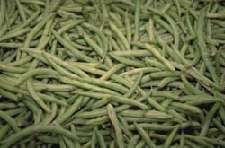
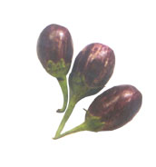
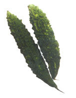
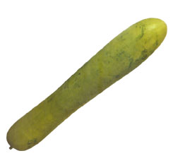
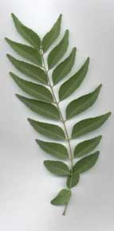
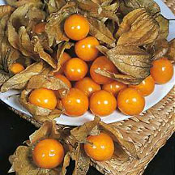
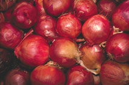

Nature's finest.
Fresh vegetables.
Discover our range of fresh Indian vegetables, carefully selected for quality, consistency and international trade.
EXPLORE OUR VEGETABLES ↗From Indian farms to international markets.
East Asia Trading supplies fresh vegetables to retailers, importers, wholesalers and distributors. Our team focuses on sourcing, inspection, packing and handling to meet customers' quality and shipment requirements.
Our range includes tender okra, beans, brinjal, chillies, gourds, cabbage and specialty vegetables. Packing specifications can be discussed according to your requirements.
DISCUSS YOUR REQUIREMENTS ↗
Explore our vegetables
Browse the range and enquire about your preferred vegetables and packing requirements.


Brinjal / Baby Eggplant
Small eggplants used in traditional Asian cuisine.
ENQUIRE ABOUT THIS PRODUCT ↗






Product photographs are taken from the original East Asia Trading website archive where available. Some original images are low-resolution; the same photograph is used for multiple gourds where the archive has no individually identified image. Contact us for current product and shipment photographs.
Indian Okra
(Lady Finger)
Indian okra, also called Bhindi, is valued for its tender pods and is a popular fresh vegetable in international markets.
Original catalogue packing guidance: Corrugated boxes of approximately 5–10 kg, subject to customer requirements.
REQUEST PRODUCT DETAILS ↗Looking for quality fresh vegetables?
Tell us what you need, and our team can discuss your product and packing requirements.
SEND AN ENQUIRY ↗